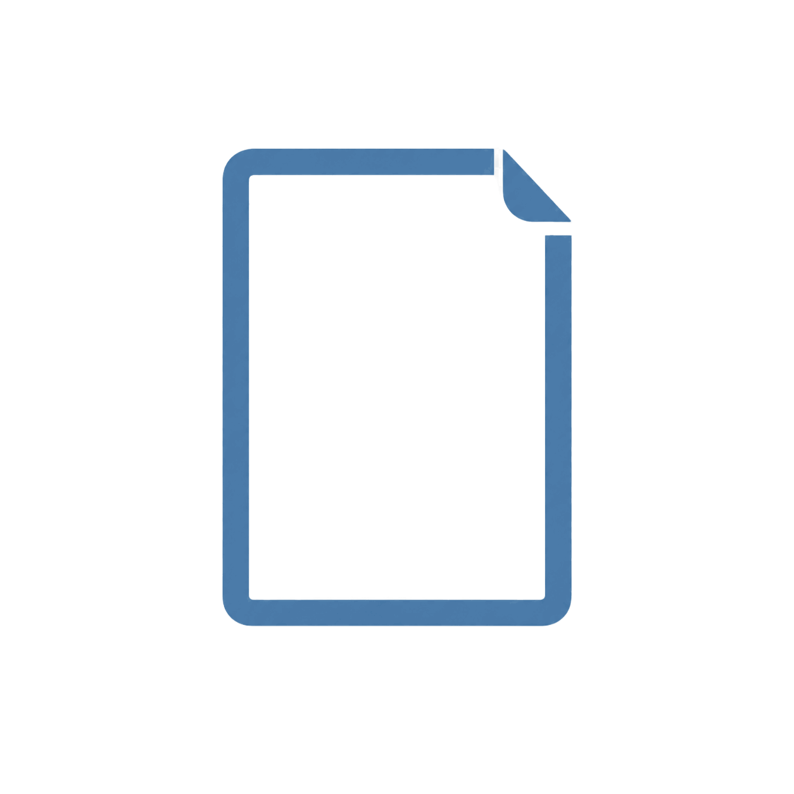
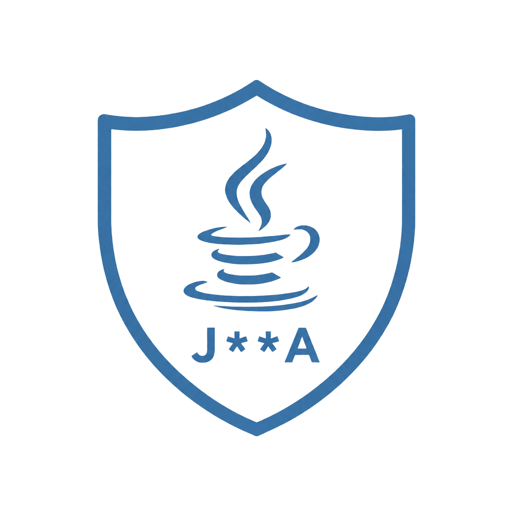
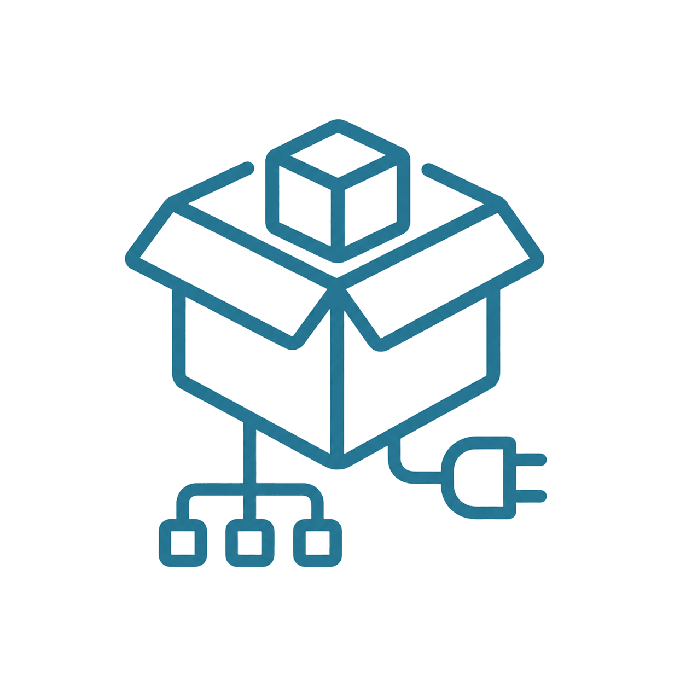

<template id="scene-001-template">
  <div
    id="scene-001"
    class="scene-root scene-001"
    data-composition-id="scene-001"
    data-width="1920"
    data-height="1080"
    data-start="0"
    data-duration="28"
  >
    <main class="concept-stage">
      <section id="s1-nested-concept" class="nested-concept" aria-label="Java 通用信息脱敏组件">
        <div id="s1-computer-shell" class="nested-icon nested-icon--computer">
          
        </div>
        <div id="s1-file-shell" class="nested-icon nested-icon--file">
          
        </div>
        <div id="s1-java-shell" class="nested-icon nested-icon--java">
          
        </div>
      </section>

      <section id="s1-stack-frame" class="cc-stack-frame cc-stack-frame--blue entry-frame" aria-label="敏感信息入口">
        <div class="cc-stack-frame__body">
          <div id="s1-row-api" class="coverage-row">
            <div class="coverage-label-stage">
              <div id="s1-old-api" class="cc-stack-label cc-stack-label--coral-dark cc-stack-label--md cc-stack-label--block coverage-label coverage-label--old">接口</div>
              <div id="s1-new-api" class="cc-stack-label cc-stack-label--teal-light cc-stack-label--md cc-stack-label--block coverage-label coverage-label--new">覆盖接口响应</div>
            </div>
            <span id="s1-check-api" class="cc-check-badge cc-check-badge--green cc-check-badge--md cc-check-badge--static coverage-check">
              <svg class="cc-check-badge__icon" viewBox="0 0 64 64" fill="none" role="img" aria-label="接口响应已覆盖">
                <path class="cc-check-badge__mark" d="M18 33.5L28.5 44L47 21"></path>
              </svg>
            </span>
          </div>

          <div id="s1-row-log" class="coverage-row">
            <div class="coverage-label-stage">
              <div id="s1-old-log" class="cc-stack-label cc-stack-label--blue-light cc-stack-label--md cc-stack-label--block coverage-label coverage-label--old">日志</div>
              <div id="s1-new-log" class="cc-stack-label cc-stack-label--teal-light cc-stack-label--md cc-stack-label--block coverage-label coverage-label--new">覆盖日志输出</div>
            </div>
            <span id="s1-check-log" class="cc-check-badge cc-check-badge--green cc-check-badge--md cc-check-badge--static coverage-check">
              <svg class="cc-check-badge__icon" viewBox="0 0 64 64" fill="none" role="img" aria-label="日志输出已覆盖">
                <path class="cc-check-badge__mark" d="M18 33.5L28.5 44L47 21"></path>
              </svg>
            </span>
          </div>

          <div id="s1-row-cross" class="coverage-row">
            <div class="coverage-label-stage">
              <div id="s1-old-cross" class="cc-stack-label cc-stack-label--coral-dark cc-stack-label--md cc-stack-label--block coverage-label coverage-label--old">跨系统调用</div>
              <div id="s1-new-cross" class="cc-stack-label cc-stack-label--teal-light cc-stack-label--md cc-stack-label--block coverage-label coverage-label--new">主动脱敏</div>
            </div>
            <span id="s1-check-cross" class="cc-check-badge cc-check-badge--green cc-check-badge--md cc-check-badge--static coverage-check">
              <svg class="cc-check-badge__icon" viewBox="0 0 64 64" fill="none" role="img" aria-label="主动脱敏已覆盖">
                <path class="cc-check-badge__mark" d="M18 33.5L28.5 44L47 21"></path>
              </svg>
            </span>
          </div>
        </div>
      </section>

      <section id="s1-plug-concept" class="plug-concept" aria-label="接入 Java 脱敏组件">
        
      </section>

      
      
    </main>

    <div class="caption" data-layout-allow-overlap>这是一个 Java 通用信息脱敏组件</div>
    <div class="caption" data-layout-allow-overlap>敏感字段可能分散在多个输出入口</div>
    <div class="caption" data-layout-allow-overlap>人工逐个排查工作量大，也容易遗漏</div>
    <div class="caption" data-layout-allow-overlap>接入组件后统一覆盖三类使用场景</div>
    <div class="caption" data-layout-allow-overlap>脱敏记录会继续帮助程序员补齐规则</div>

    <style>
      @import url("../src/styles/runtime.css");
      @import url("../src/components/StackFrame/styles.css");
      @import url("../src/components/StackLabel/styles.css");
      @import url("../src/components/CheckBadge/styles.css");

      #scene-001 {
        background: #f7f8fa;
      }

      #scene-001::before {
        opacity: 0.48;
      }

      #scene-001 .concept-stage {
        position: relative;
        width: 100%;
        height: 100%;
        overflow: hidden;
      }

      #scene-001 .concept-stage::after {
        content: "";
        position: absolute;
        z-index: 0;
        top: 164px;
        left: 50%;
        width: 920px;
        height: 720px;
        border-radius: 50%;
        background: radial-gradient(circle, rgba(44, 154, 154, 0.11), rgba(44, 154, 154, 0) 68%);
        transform: translateX(-50%);
        pointer-events: none;
      }

      #scene-001 .nested-concept,
      #scene-001 .plug-concept {
        position: absolute;
        z-index: 3;
        top: 330px;
        left: 710px;
        width: 500px;
        height: 390px;
      }

      #scene-001 .nested-concept {
        opacity: 0;
      }

      #scene-001 .nested-icon {
        position: absolute;
        display: grid;
        place-items: center;
        opacity: 0;
      }

      #scene-001 .nested-icon img {
        display: block;
        width: 100%;
        height: 100%;
        object-fit: contain;
      }

      #scene-001 .nested-icon--computer {
        inset: 0;
      }

      #scene-001 .nested-icon--file {
        top: 92px;
        left: 132px;
        width: 236px;
        height: 220px;
      }

      #scene-001 .nested-icon--java {
        top: 144px;
        left: 190px;
        width: 120px;
        height: 120px;
      }

      #scene-001 .entry-frame {
        position: absolute;
        z-index: 3;
        top: 292px;
        left: 600px;
        width: 720px;
        min-width: 0;
        opacity: 0;
        transform-origin: center center;
      }

      #scene-001 .entry-frame .cc-stack-frame__body {
        gap: 18px;
        padding: 32px;
        border-width: 5px;
        border-radius: 32px;
      }

      #scene-001 .coverage-row {
        display: grid;
        grid-template-columns: minmax(0, 1fr) 72px;
        align-items: center;
        gap: 18px;
        min-width: 0;
        transform-origin: center center;
      }

      #scene-001 .coverage-label-stage {
        position: relative;
        min-width: 0;
        height: 76px;
      }

      #scene-001 .coverage-label {
        position: absolute;
        inset: 0;
        min-width: 0;
        min-height: 76px;
        font-size: 34px;
        border-radius: 24px;
      }

      #scene-001 .coverage-label--new,
      #scene-001 .coverage-check {
        opacity: 0;
      }

      #scene-001 .coverage-check {
        width: 72px;
        transform-origin: center center;
      }

      #scene-001 .coverage-check .cc-check-badge__mark {
        stroke-dashoffset: 48;
      }

      #scene-001 .plug-concept {
        display: grid;
        place-items: center;
        opacity: 0;
        transform-origin: center center;
      }

      #scene-001 .plug-concept img {
        display: block;
        width: 340px;
        height: 340px;
        object-fit: contain;
        filter: drop-shadow(0 24px 34px rgba(47, 111, 143, 0.18));
      }

      #scene-001 .scene-character {
        position: absolute;
        z-index: 4;
        right: 110px;
        bottom: 138px;
        width: 300px;
        height: 360px;
        object-fit: contain;
        object-position: bottom center;
        opacity: 0;
      }

      #scene-001 .caption {
        z-index: 8;
      }
    </style>

    <script src="https://cdn.jsdelivr.net/npm/gsap@3.14.2/dist/gsap.min.js"></script>
    <script>
      window.__timelines = window.__timelines || {};

      var tl = gsap.timeline({ paused: true });
      var captions = document.querySelectorAll("#scene-001 .caption");
      var oldLabels = ["#s1-old-api", "#s1-old-log", "#s1-old-cross"];
      var newLabels = ["#s1-new-api", "#s1-new-log", "#s1-new-cross"];
      var rows = ["#s1-row-api", "#s1-row-log", "#s1-row-cross"];
      var checks = ["#s1-check-api", "#s1-check-log", "#s1-check-cross"];

      tl.fromTo(
        "#s1-nested-concept",
        { opacity: 0, scale: 0.9 },
        { opacity: 1, scale: 1, duration: 0.55, ease: "power2.out", immediateRender: false },
        0.2
      );
      tl.fromTo(
        "#s1-computer-shell",
        { opacity: 0, scale: 0.82 },
        { opacity: 1, scale: 1, duration: 0.62, ease: "back.out(1.25)", immediateRender: false },
        0.35
      );
      tl.fromTo(
        "#s1-file-shell",
        { opacity: 0, scale: 0.62 },
        { opacity: 1, scale: 1, duration: 0.58, ease: "expo.out", immediateRender: false },
        1.15
      );
      tl.fromTo(
        "#s1-java-shell",
        { opacity: 0, scale: 0.45 },
        { opacity: 1, scale: 1, duration: 0.55, ease: "back.out(1.35)", immediateRender: false },
        2.05
      );
      tl.to(
        "#s1-nested-concept",
        { opacity: 0, scale: 0.92, duration: 0.55, ease: "power2.in" },
        4.3
      );

      tl.fromTo(
        "#s1-stack-frame",
        { opacity: 0, scale: 0.9 },
        { opacity: 1, scale: 1, duration: 0.65, ease: "power3.out", immediateRender: false },
        5
      );
      rows.forEach(function (selector, index) {
        tl.fromTo(
          selector,
          { opacity: 0, y: 28 },
          {
            opacity: 1,
            y: 0,
            duration: 0.48,
            ease: index === 0 ? "power2.out" : index === 1 ? "circ.out" : "expo.out",
            immediateRender: false
          },
          5.8 + index * 1.15
        );
      });

      tl.fromTo(
        "#s1-character-tired",
        { opacity: 0, x: 48, y: 20, scale: 0.92 },
        { opacity: 1, x: 0, y: 0, scale: 1, duration: 0.65, ease: "power3.out", immediateRender: false },
        10
      );
      tl.to(
        "#s1-stack-frame",
        { scale: 1.025, duration: 0.45, ease: "sine.inOut", yoyo: true, repeat: 1 },
        11.1
      );

      tl.to(
        "#s1-stack-frame",
        { x: -490, scale: 0.78, duration: 0.9, ease: "power3.inOut" },
        15
      );
      tl.to(
        rows.join(", "),
        { opacity: 0.35, duration: 0.45, ease: "power1.inOut" },
        15.25
      );
      tl.fromTo(
        "#s1-plug-concept",
        { opacity: 0, scale: 0.3 },
        { opacity: 1, scale: 1, duration: 0.85, ease: "expo.out", immediateRender: false },
        15.35
      );

      oldLabels.forEach(function (oldSelector, index) {
        var newSelector = newLabels[index];
        var rowSelector = rows[index];
        var checkSelector = checks[index];
        var start = 16.4 + index * 1.45;

        tl.to(
          rowSelector,
          { opacity: 1, scale: 1.035, duration: 0.28, ease: "power2.out", overwrite: "auto" },
          start
        );
        tl.to(
          oldSelector,
          { opacity: 0, scale: 0.9, duration: 0.28, ease: "power2.in", overwrite: "auto" },
          start
        );
        tl.fromTo(
          newSelector,
          { opacity: 0, scale: 0.9 },
          { opacity: 1, scale: 1, duration: 0.38, ease: "back.out(1.2)", overwrite: "auto", immediateRender: false },
          start + 0.18
        );
        tl.fromTo(
          checkSelector,
          { opacity: 0, scale: 0.72 },
          { opacity: 1, scale: 1, duration: 0.32, ease: "back.out(1.35)", overwrite: "auto", immediateRender: false },
          start + 0.32
        );
        tl.to(
          checkSelector + " .cc-check-badge__mark",
          { strokeDashoffset: 0, duration: 0.5, ease: "power2.out", overwrite: "auto" },
          start + 0.42
        );
        tl.to(
          rowSelector,
          { opacity: 0.35, scale: 1, duration: 0.35, ease: "power1.inOut", overwrite: "auto" },
          start + 1.05
        );
      });

      tl.to(
        "#s1-character-tired",
        { opacity: 0, x: 34, scale: 0.94, duration: 0.4, ease: "power2.in" },
        20.8
      );
      tl.fromTo(
        "#s1-character-success",
        { opacity: 0, x: 44, y: 18, scale: 0.9 },
        { opacity: 1, x: 0, y: 0, scale: 1, duration: 0.6, ease: "back.out(1.2)", immediateRender: false },
        21.05
      );
      tl.to(
        "#s1-plug-concept",
        {
          scale: 1.035,
          duration: 0.55,
          ease: "sine.inOut",
          yoyo: true,
          repeat: 1
        },
        21.2
      );

      [
        [0, 0.6, 4.8],
        [1, 5, 9.8],
        [2, 10, 14.8],
        [3, 15, 21.8],
        [4, 22, 27.6]
      ].forEach(function (item) {
        tl.fromTo(
          captions[item[0]],
          { opacity: 0, y: 12 },
          { opacity: 1, y: 0, duration: 0.3, ease: "power2.out", overwrite: "auto", immediateRender: false },
          item[1]
        );
        tl.to(
          captions[item[0]],
          { opacity: 0, duration: 0.22, ease: "power2.in", overwrite: "auto" },
          item[2]
        );
      });

      window.__timelines["scene-001"] = tl;
    </script>
  </div>
</template>
